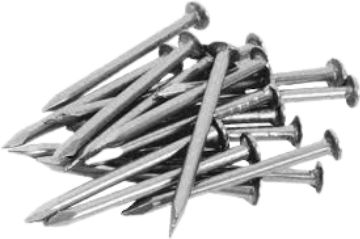
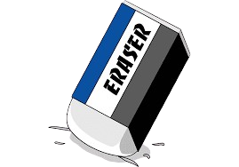
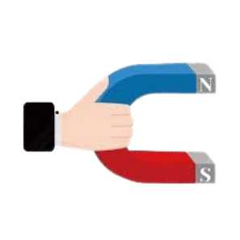

Petunjuk:
1️⃣ Pilih benda (Paku atau Penghapus)
2️⃣ Klik "Tarik dengan Magnet"
3️⃣ Paku akan mendekat ke magnet, penghapus tidak bergerak

📌 Paku (Besi)
✓

✏️ Penghapus (Karet)
✓

🧲 Magnet
•••••
📌 Paku
Hasil Pengamatan:
Pilih benda terlebih dahulu, lalu klik "Tarik dengan Magnet"!
📚 Penjelasan:
Gaya magnet adalah gaya tarik yang dimiliki magnet terhadap benda-benda tertentu, terutama yang terbuat dari logam seperti besi dan baja. Magnet tidak dapat menarik semua benda. Hanya benda yang mengandung logam tertentu yang dapat ditarik oleh magnet.